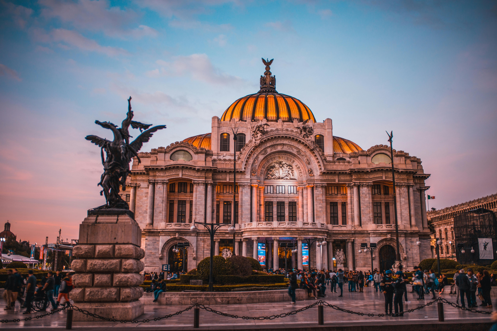
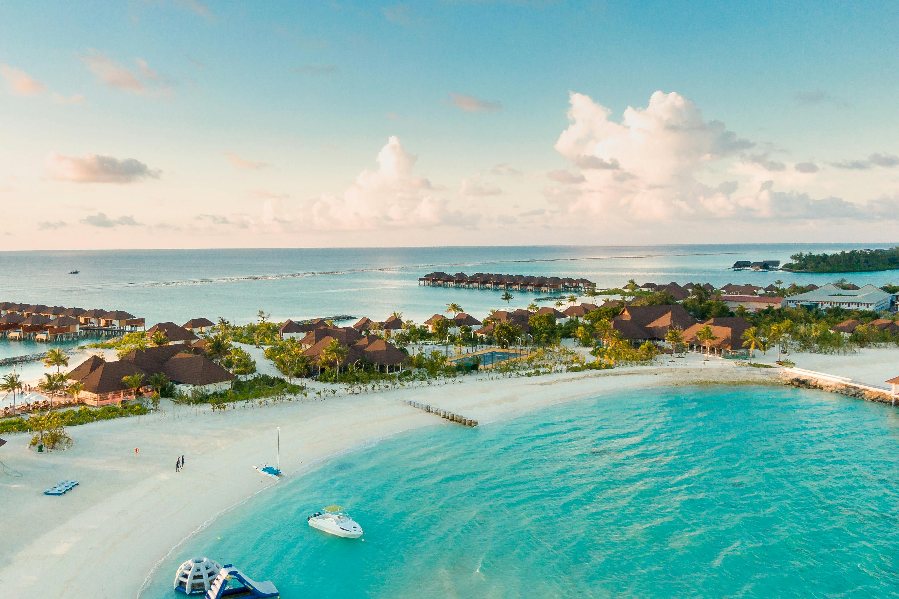
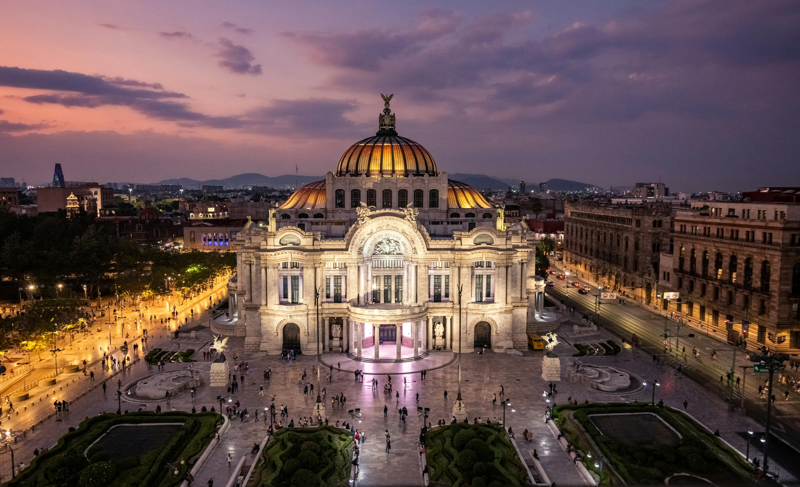

México, un país lleno de maravillas
México es un país lleno de destinos impresionantes que combinan historia, naturaleza y cultura en un mismo lugar. Desde playas paradisíacas hasta majestuosas zonas arqueológicas, cada rincón ofrece una experiencia única que cautiva a quienes lo visitan. Explorar México es descubrir paisajes inolvidables y sitios emblemáticos que reflejan su riqueza y diversidad. Uno de los más representativos es Chichén Itzá, una de las nuevas maravillas del mundo, donde la historia de la civilización maya cobra vida a través de sus imponentes estructuras. Por otro lado, Cancún se posiciona como uno de los destinos más populares gracias a sus playas de arena blanca y aguas cristalinas, ideales para el descanso y la diversión. En contraste, Ciudad de México ofrece una experiencia urbana única, llena de museos, monumentos y espacios históricos que permiten conocer de cerca la evolución cultural del país. Cada uno de estos destinos brinda una perspectiva distinta de México, invitando a los viajeros a recorrer sus maravillas, disfrutar de sus paisajes y sumergirse en experiencias turísticas inolvidables.
Chichén Itzá

Chichén Itzá es una de las zonas arqueológicas más impresionantes de México. Su pirámide principal, El Castillo, también conocida como Kukulkán, destaca por su imponente arquitectura y su profundo significado astronómico, reflejando el avanzado conocimiento de la civilización maya. Este sitio, declarado Patrimonio de la Humanidad y reconocido como una de las nuevas maravillas del mundo, ofrece mucho más que su famosa pirámide. Lugares como el Gran Juego de Pelota, el Templo de los Guerreros y el Cenote Sagrado permiten al visitante imaginar cómo era la vida en esta antigua ciudad. Recorrer Chichén Itzá es viajar en el tiempo: cada estructura, cada relieve y cada espacio cuenta una historia que conecta el presente con el pasado. Es un destino que no solo impresiona por su grandeza, sino que también invita a comprender la riqueza cultural y el legado histórico de una de las civilizaciones más fascinantes del mundo.
Cancún
Cancún es famoso por sus playas de arena blanca y aguas turquesa, consideradas entre las más hermosas del mundo. Este destino caribeño combina paisajes paradisíacos con una amplia oferta turística que atrae a viajeros de todas partes. Ofrece descanso, diversión y naturaleza en un solo lugar. Sus playas invitan a relajarse bajo el sol, mientras que sus arrecifes permiten explorar la vida marina a través del snorkel o el buceo. Además, su cercanía con la Riviera Maya brinda acceso a cenotes, selvas y otros escenarios naturales únicos. Cancún no solo es un destino para descansar, sino también un punto de partida ideal para descubrir la riqueza natural y paisajística del Caribe mexicano, creando una experiencia turística completa e inolvidable.

Ciudad de México

Ciudad de México es el corazón cultural de México y uno de los destinos más fascinantes de América Latina. Esta gran metrópoli destaca por su capacidad de fusionar historia y modernidad en cada uno de sus rincones, ofreciendo al visitante una experiencia completa y dinámica. La ciudad alberga una enorme riqueza histórica que se refleja en sitios emblemáticos como el Zócalo, uno de los espacios públicos más grandes del mundo, rodeado de construcciones coloniales y vestigios de antiguas civilizaciones. Muy cerca se encuentra el Templo Mayor, un lugar que permite asomarse al pasado prehispánico y comprender las raíces de la cultura mexicana. Además, la Ciudad de México es reconocida por su impresionante oferta de museos, considerada una de las más amplias del mundo. Espacios como el Museo Nacional de Antropología resguardan piezas únicas que narran la historia de las civilizaciones que habitaron el territorio, convirtiendo cada visita en un recorrido educativo y enriquecedor. Pero no todo es historia: la ciudad también vibra con una intensa vida urbana. Barrios como Coyoacán y Roma combinan arte, arquitectura, espacios culturales y una atmósfera moderna que invita a recorrer sus calles, disfrutar de su ambiente y descubrir nuevos rincones. En conjunto, la Ciudad de México es un destino que lo tiene todo: tradición, innovación, cultura y energía urbana. Visitarla es sumergirse en una experiencia donde cada día ofrece algo distinto, dejando en el viajero una impresión profunda y duradera.